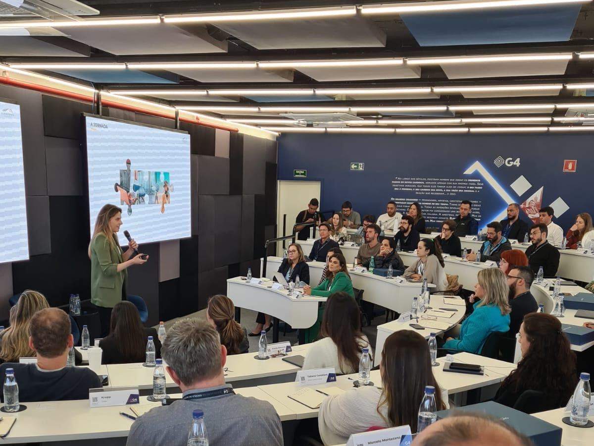

8 unidades
8 jeitos diferentes de registrar
Cada hospital da rede usa uma planilha, um formulário ou um caderno. Consolidar um indicador para a diretoria leva dias — e ninguém confia totalmente no número.
A S.E.R. Cliente transforma a voz do paciente em ações concretas, com registros completos, rastreabilidade e conformidade com os mais altos padrões de qualidade e acreditação hospitalar.
Canais de entrada
Todas as manifestações
com registro e rastreabilidade.
Cada hospital da rede usa uma planilha, um formulário ou um caderno. Consolidar um indicador para a diretoria leva dias — e ninguém confia totalmente no número.
O avaliador da ONA ou da JCI pede evidência de tratamento, prazo e melhoria contínua. Sua equipe para tudo para caçar e-mails e reconstruir históricos.
Sem categorização e sem análise de causa-raiz, o problema se repete no mesmo setor. A ouvidoria responde, mas o hospital não aprende.
Recursos para hospitais
A S.E.R. Cliente une conceitos de Experiência do Cliente, princípios da Qualidade Total e Inteligência Artificial para transformar a voz do paciente em melhoria assistencial e administrativa.
Formulários customizados por link ou QR code na recepção, no quarto e na alta — além de registro presencial, telefone e e-mail. Tudo em uma mesma fila.
SaberPrazos diferentes para manifestações assistenciais, administrativas e denúncias, com alertas antes do vencimento para o gestor do setor.
ControleCategorização automática por setor e tema, e sugestões de resposta contextualizadas e humanizadas para o paciente — sempre revisadas pela sua equipe.
EntenderO paciente recebe um código de acompanhamento e acessa o andamento por link seguro, com token — sem criar conta, sem esquecer senha.
TransparênciaFerramentas da Qualidade Total incorporadas ao tratamento e alertas de recorrência por setor, para que o mesmo problema não volte no mês seguinte.
QualidadeTrilha completa de cada manifestação — recebimento, encaminhamento, prazo, resposta e encerramento — pronta para ONA, JCI e órgãos de controle.
AuditoriaCada unidade com autonomia e permissões próprias; a diretoria com dashboard consolidado da rede e exportação em xls, ppt e BI.
MultiunidadePesquisa enviada automaticamente após o encerramento. Você mede a experiência do paciente com a resolução, não só a quantidade de reclamações.
ExperiênciaAPI REST documentada para integração com sistemas de gestão hospitalar, CRM e BI. Levantamento técnico gratuito no onboarding.
IntegraçãoMais escuta. Mais insights. Mais saúde.
O Método S.E.R. Cliente auxilia no atendimento da manifestação, na identificação da causa-raiz e melhorias contínuas. Um ciclo completo — da captura à evidência documentada para o seu board e para as agências reguladoras.
O primeiro passo é garantir um canal acessível e ágil para que o cliente possa se expressar. Reclamações, sugestões e elogios — tudo centralizado, estruturado e pronto para análise.
Para um diagnóstico preciso, é fundamental analisar o feedback de forma profunda e contextualizada. Entender vai além de ouvir, significa transformar dados em decisões estratégicas.
Iniciativas estratégicas implementadas com base nas etapas anteriores. Agir de forma assertiva para minimizar impactos negativos, solucionar problemas e prevenir recorrências.
Acreditação e auditoria
Avaliadores querem ver que a voz do paciente é registrada, tratada no prazo e usada para melhorar processos. A S.E.R. Cliente documenta tudo isso automaticamente.
Gestão da rede
Dashboards executivos e gerenciais mostram onde estão os gargalos da experiência do paciente — por unidade, setor, tema e período — sem ninguém montar planilha.
Procurando uma alternativa?
Muitos hospitais ainda usam planilhas, ferramentas genéricas de atendimento ou sistemas de ouvidoria antigos. Veja o que realmente muda com a S.E.R. Cliente.
| Critério | Planilha e e-mail | Helpdesk / SAC genérico | Sistema de ouvidoria legado | S.E.R. Cliente |
|---|---|---|---|---|
| SLA automático por tipo de manifestação | Não | Parcial | Varia | Sim, com alertas e priorização |
| Trilha de auditoria para ONA/JCI | Não | Parcial | Varia | Relatório em 1 clique |
| IA para categorizar e responder | Não | Genérica | Raramente | Integrada e especializada em saúde |
| Causa-raiz e Qualidade Total | Não | Não | Varia | Nativo na plataforma |
| Paciente acompanha sem login | Não | Exige conta | Varia | Protocolo + token seguro |
| NPS, CSAT e CES pós-resolução | Não | Parcial | Raramente | Automático e por unidade |
| Visão consolidada multiunidade | Manual | Parcial | Varia | Nativa, com dashboards executivos |
| Tempo até começar a usar | — | Semanas | Meses | 30 minutos |
Guia rápido
A ouvidoria hospitalar é o canal formal pelo qual pacientes, acompanhantes e familiares registram reclamações, sugestões, elogios, solicitações e denúncias sobre o atendimento. Mais do que um balcão de queixas, é uma fonte de diagnóstico: mostra onde a experiência do paciente falha e onde a assistência pode melhorar.
Em hospitais acreditados ou em processo de acreditação (ONA, JCI e similares), a ouvidoria também é evidência: avaliadores verificam se a instituição escuta o paciente, responde dentro de prazos definidos e usa essas informações para melhorar processos. Na rede pública e no SUS, a Lei nº 13.460/2017 estabelece o direito de manifestação e prazos de resposta. E como as manifestações envolvem dados de saúde — dados sensíveis pela LGPD —, controle de acesso e segurança da informação são obrigatórios.
Conteúdo informativo. Requisitos de acreditação e de legislação devem ser confirmados com os manuais vigentes e com a assessoria jurídica da instituição.
Daniela Fantinati
Mais de 20 anos conectando estratégia, cultura e resultados em Experiência do Cliente no setor da saúde.

Perguntas frequentes
Reunimos as principais perguntas de gestores e equipes hospitalares para você entender como a S.E.R. Cliente funciona na prática.
Demonstração gratuita
Mostramos a plataforma com cenários reais de saúde — pronto-socorro, internação, faturamento — e como ela gera as evidências da sua próxima auditoria.